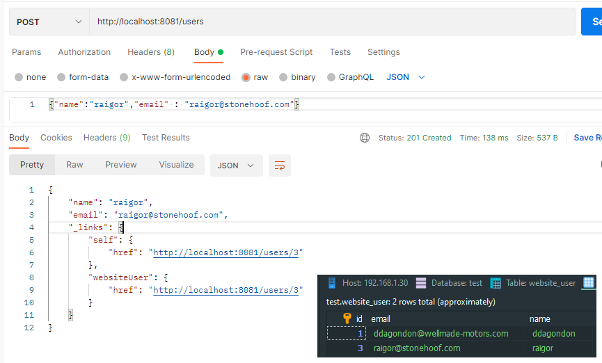
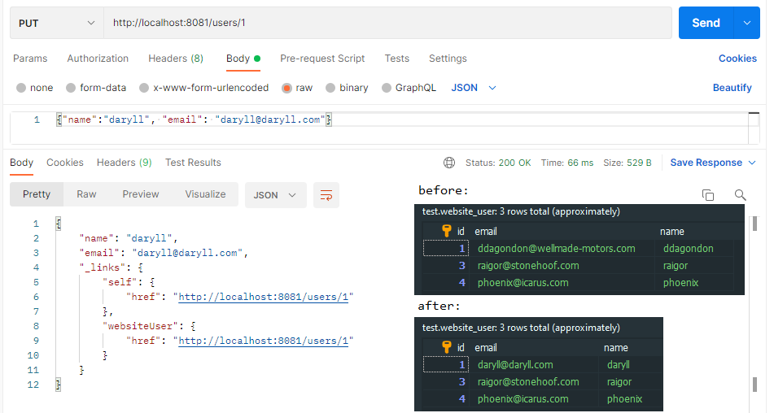

1. Overview
This article will explain the basics of Spring Data REST and show how to use it to build a simple REST API.
In general, Spring Data REST is built on top of the Spring Data project and makes it easy to build hypermedia-driven REST web services that connect to Spring Data repositories – all using HAL as the driving hypermedia type.
It takes away a lot of the manual work usually associated with such tasks and makes implementing basic CRUD functionality for web applications quite simple.
2. Maven Dependencies
The following Maven dependencies are required for our simple application:
We decided to use Spring Boot for this example, but classic Spring will also work fine. We also chose to use the H2 embedded database in order to avoid any extra setup, but the example can be applied to any database.
2.1 Configure properties
Create a database named "test". But don't create any table. A table is automatically created when making a model class.
3. Writing the Application
We will start by writing a domain object to represent a user of our website:
Every user has a name and an email, as well as an automatically-generated id. Now we can write a simple repository:
This is an interface that allows you to perform various operations with WebsiteUser objects. We also defined a custom query that will provide a list of users based on a given name.
The @RepositoryRestResource annotation is optional and is used to customize the REST endpoint. If we decided to omit it, Spring would automatically create an endpoint at “/websiteUsers” instead of “/users“.
Finally, we will write a standard Spring Boot main class to initialize the application:
That's it! We now have a fully-functional REST API. Let's take a look at it in action.
4. Accessing the REST API
If we run the application and go to http://localhost:8080/ in a browser, we will receive the following JSON:
As you can see, there is a “/users” endpoint available, and it already has the “?page“, “?size” and “?sort” options.
There is also a standard “/profile” endpoint, which provides application metadata. It is important to note that the response is structured in a way that follows the constraints of the REST architecture style. Specifically, it provides a uniform interface and self-descriptive messages. This means that each message contains enough information to describe how to process the message.
There are no users in our application yet, so going to http://localhost:8080/users would just show an empty list of users. Let's use curl to add a user.
Lets take a look at the response headers as well:
You will notice that the returned content type is “application/hal+json“. HAL is a simple format that gives a consistent and easy way to hyperlink between resources in your API. The header also automatically contains the Location header, which is the address we can use to access the newly created user.
We can now access this user at http://localhost:8080/users/1
You can also use curl or any other REST client to issue PUT, PATCH, and DELETE requests. It also is important to note that Spring Data REST automatically follows the principles of HATEOAS. HATEOAS is one of the constraints of the REST architecture style, and it means that hypertext should be used to find your way through the API.
Finally, lets try to access the custom query that we wrote earlier and find all users with the name “test”. This is done by going to http://localhost:8080/users/search/findByName?name=test
5. Spring Data REST methods
POST method adds record in the table

GET method retrieves a record by its Id
PUT method updates a record provided by its Id

DELETE method deletes a record by its Id
Source